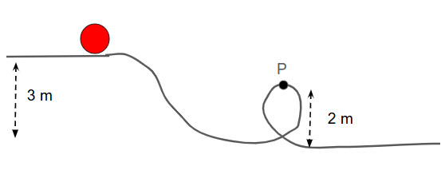

In a system where only conservative forces (like gravity or spring forces) act, the total mechanical energy stays constant. This is a core idea in energy-based problem solving for AP Physics.
\( E = K + U \)
Total Energy = Kinetic Energy + Potential Energy
The mechanical energy of a system includes the energy of motion (kinetic energy) and stored energy due to position (potential energy). As long as no external non-conservative forces (like friction or air drag) do work, the total mechanical energy doesn’t change.
\( E_i = E_f \quad \text{or} \quad K_i + U_i = K_f + U_f \)
Energy at the beginning equals energy at the end.
This equation is powerful because it allows us to:
Things to note: The TOTAL mechanical energy is NOT changing because there are only conservative forces and no non-conservative forces. As potential energy increases, kinetic energy decreases and vice versa.
Problem: A 3 kg ball is dropped from a height of 4 m. What is its speed just before hitting the ground?
At the top: \( K_i = 0 \), \( U_i = mgh = 3 \cdot 9.8 \cdot 4 = 117.6 \ \text{J} \)
At the bottom: \( U_f = 0 \), \( K_f = \frac{1}{2}mv^2 \)
Set energies equal: \( K_i + U_i = K_f + U_f \)
\( 0 + 117.6 = \frac{1}{2} \cdot 3 \cdot v^2 \Rightarrow v^2 = 78.4 \Rightarrow v \approx 8.85 \ \text{m/s} \)
Problem:A ball is on a hill, 3 meters above the ground. It then rolls down a ramp and enters the loop. What is its velocity at point P?
Step 1: Use conservation of energy.
At the top: kinetic energy + potential energy = total energy
\( E_i = E_f \)
\( mgh_i = \frac{1}{2}mv^2 + mgh_f \)
Step 2: Plug in known values:
\( m \cdot 9.8 \cdot 3 = \frac{1}{2}m v^2 + m \cdot 9.8 \cdot 2 \)
Step 3: Cancel mass \( m \):
\( 9.8 \cdot 3 = \frac{1}{2} v^2 + 9.8 \cdot 2 \)
\( 29.4 = \frac{1}{2} v^2 + 19.6 \)
Step 4: Solve for \( v \):
\( 29.4 - 19.6 = \frac{1}{2}v^2 \Rightarrow 9.8 = \frac{1}{2}v^2 \)
\( v^2 = 19.6 \Rightarrow v = \sqrt{19.6} \approx 4.43 \ \text{m/s} \)
✅ Final Answer: The velocity of the ball at the top of the loop is approximately 4.43 m/s.